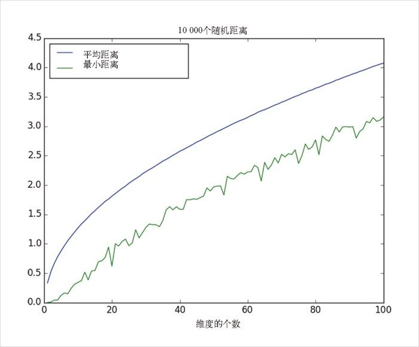
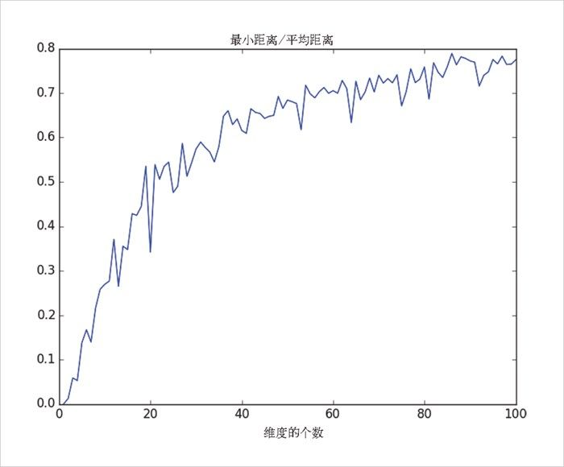
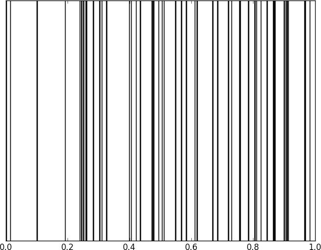
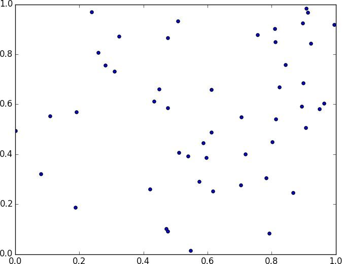
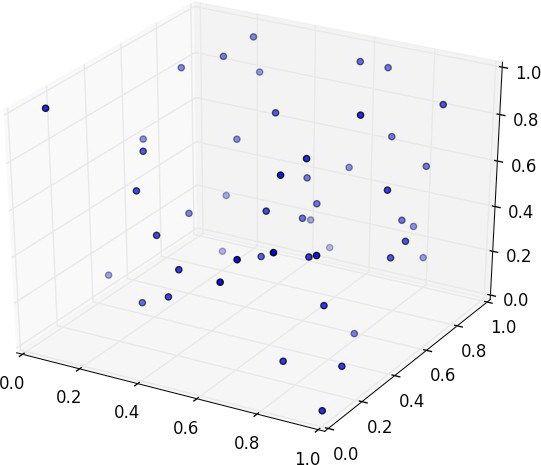

12.3 维数灾难
在更高的维度上，k 近邻法会因为“维数灾难”而遇到麻烦，其根源在于高维空间过于巨大 。高维空间内的点根本不会表现得彼此邻近。观察维数灾难的一种方法是在一个高维度的 d 维空间“单位立方体”上随机地生成数据点对，并计算它们之间的距离。
现在，生成随机点应该是老生常谈了：
def random_point(dim):
return [random.random() for _ in range(dim)]
写一个函数生成距离也是如此：
def random_distances(dim, num_pairs):
return [distance(random_point(dim), random_point(dim))
for _ in range(num_pairs)]
对从 1 到 100 的每一个维度，我们会计算 10 000 个距离，并使用它们计算每个维度上点和点之间的平均距离和最小距离（图 12-5）：
dimensions = range(1, 101)
avg_distances = []
min_distances = []
random.seed(0)
for dim in dimensions:
distances = random_distances(dim, 10000) # 10 000个随机对
avg_distances.append(mean(distances)) # 追踪平均值
min_distances.append(min(distances)) # 追踪最小值

图 12-5：维数的灾难
随着维度数量的增加，点和点之间的平均距离也增加了。但更麻烦的是最近距离和平均距离之间的比例（图 12-6）：
min_avg_ratio = [min_dist / avg_dist
for min_dist, avg_dist in zip(min_distances, avg_distances)]

图 12-6：维数的另一个灾难
在低维数据集中，最邻近的点的距离看起来比点和点的平均距离要更小。但仅当两个点在每个维度上都邻近时，我们才可称这两个点是邻近的，而且每个增加的维度——即使仅仅是噪声——都有可能会让每个点更加远离其他的点。当有许多维度时，看上去最邻近的两个点的距离并不比点和点的平均距离小，这说明两个点邻近并不特别意味着什么（数据中有许多结构的行为使其看起来像是在更低的维度）。
思考这个问题的一个不同的方法涉及更高维空间的稀疏性。
如果从 0 到 1 之间随机取 50 个数，你可能会得到单位区间内的一个非常好的样本（图 12-7）。

图 12-7：一维内的 50 个随机点
如果在单位正方形内随机取 50 个点，得到的规模会更小（图 12-8）。

图 12-8：二维内的 50 个随机点
在三个维度中的随机样本会变得更稀疏（图 12-9）。

图 12-9：三维内的 50 个随机点
matplotlib 不能很好地画出 4 维的图形，所以我们只能给出上面的几种情形，即便如此，你也已经能够看到某些点的附近因为没有邻近的点而存在大片的空白空间。在更高的维度上——除非你能以指数规模得到更多的数——大片空白空间代表的是远离你想用在预测中的所有的点的区域。
因此，如果你打算在高维中使用最近邻法，不妨先做一些降维工作。